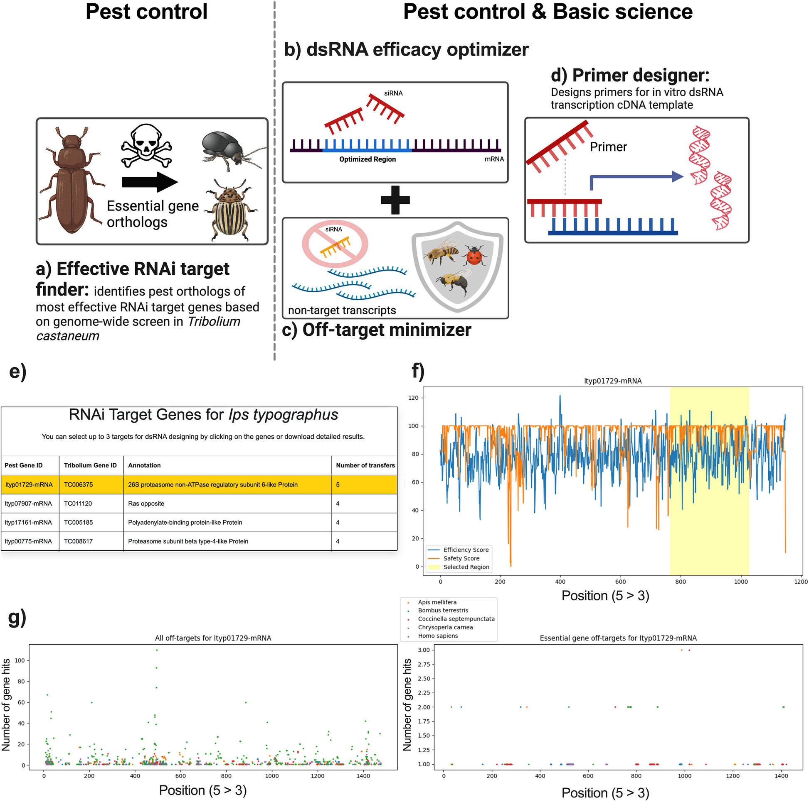

2025
RESEARCH
RNA interference
We combine insect experiments and bioinformatics to improve dsRNA design and understand the mechanisms underlying RNA interference.
The dsRIP platform brings together target-gene selection, dsRNA design and primer design. Experimental work uses RNA degradomics and proteomics to investigate how RNAi affects target transcripts and protein pathways in the cabbage stem flea beetle.

Published overview of RNAi target selection, dsRNA design, off-target analysis and primer design, with example outputs.
Related publications
2025
2026
2025
Insect Molecular Biology
The quest for the best target genes for RNAi-mediated pest control
2025
Insect Molecular Biology
Effective target genes for RNA interference-based management of the cabbage stem flea beetle
2024
2025